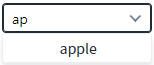
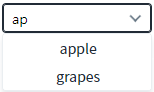
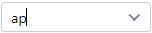
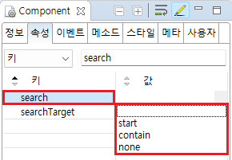

AutoComplete의 'search' 속성을 사용하여 검색어의 검색 범위를 설정하는 예제입니다. 이 속성은 검색 기준을 설정하는 기능 중 하나로, 검색 범위는 아래와 같습니다.
start : [default] 검색어와 항목의 시작과 같을 경우.
contain : 검색어가 항목에 속해 있는 경우.
none : 검색어가 항목과 완전히 같은 경우.
검색어와 항목의 시작과 같은 항목 표시하기
검색어가 항목에 속해 있는 항목 표시하기
검색어가 항목과 완전히 같은 항목 표시하기
예제 유형별로 검색어를 "ap"를 입력하여 출력된 목록을 비교합니다.
예제 영역 '입력 값과 항목의 시작 값이 같은 경우'에 구성된 AutoComplete의 입력 필드에 'ap'를 입력합니다. 목록에 항목 'apple'가 표시됩니다.
Image 1.브라우저(Chrome) 실행 예시 - 검색어와 항목의 시작과 같은 경우

예제 영역 '입력 값이 항목에 속해 있는 경우'에 구성된 AutoComplete의 입력 필드에 'ap'를 입력합니다. 목록에 항목 'apple', 'grapes'가 표시됩니다.
Image 2.브라우저(Chrome) 실행 예시 - 검색어가 항목에 속해있는 경우

예제 영역 '입력 값이 항목과 동일한 경우'에 구성된 AutoComplete의 입력 필드에 'ap'를 입력합니다. 목록에 항목이 표시되지 않습니다.
Image 3.브라우저(Chrome) 실행 예시 - 검색어가 항목와 일치할 경우

아래는 설정별 동작 방식입니다.
"start" (기본 값): 입력 값과 항목의 시작과 같을 경우만 검색.
"contain" : 입력 값이 항목에 속해 있는 모든 경우 검색.
"none" : 입력 값이 항목과 완전히 같은 경우만 검색.
이 기능은 속성 interactionMode가 "false"로 설정된 경우만 동작합니다.
Image 4.웹스퀘어 스튜디오의 Component View 예시

Example 1.Source
<!-- autoComplete의 소스 본문 예시 - 입력 값과 항목의 시작과 같을 경우만 검색 --> <w2:autoComplete search="start"> <!-- 중략 --> </w2:autoComplete> <!-- autoComplete의 소스 본문 예시 - 입력 값이 항목에 속해 있는 모든 경우 검색 --> <w2:autoComplete search="contain"> <!-- 중략 --> </w2:autoComplete> <!-- autoComplete의 소스 본문 예시 - 입력 값이 항목과 완전히 같은 경우만 검색 --> <w2:autoComplete search="none"> <!-- 중략 --> </w2:autoComplete>
search